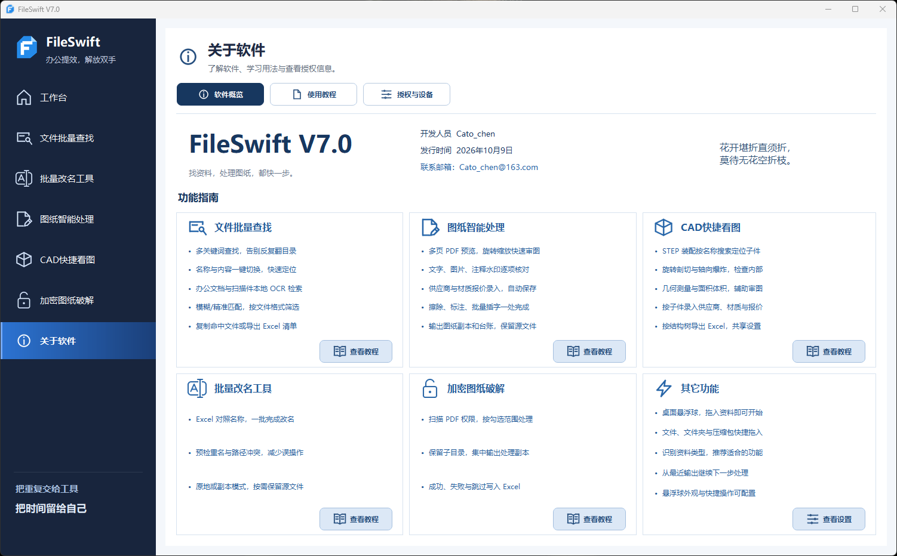

01
文件批量查找
按名称、按内容，一次找齐整批资料。
为工程图纸与日常资料而生
把反复查找、逐个改名和工程图纸处理，
交给一个顺手的Windows桌面工具。
Windows 桌面应用 · 文件在本机处理

每天都要做的事，值得做得更轻松。
01 / 核心能力
查文件、看图纸、改名称、整资料，
一个工具，处理一连串工作。
订单上的图号，表格里的料号，文档中的关键词。一次贴入，批量查找。散落在层层文件夹里的资料，找齐、汇总，一起带走。
看图时把水印处理好，把标注补齐，把供应商、材质和报价记下。同一个工作区里，图纸与信息一起整理，副本与台账一起输出。
快速查看 STEP / STP 三维模型，支持旋转、剖切、展开和尺寸查看，轻松看清装配结构与零件细节。
通过 Excel 对应新旧文件名，轻松实现批量改名。执行前检查重名及路径冲突，支持原地改名或副本输出，高效便捷，操作更安心。
图纸能打开，复制、编辑却受限？批量扫描 PDF 权限，选好文件，输出处理后的副本。保留目录与处理明细，后续使用更顺畅。
软件实拍 · 点击图片查看细节
02 / 功能一览
按名称、按内容，一次找齐整批资料。
去水印、做标注、记报价，图纸台账一起交付。
旋转、剖切、测量，从装配看到细节。
Excel 对好名称，一次改好整批文件。
批量解除 PDF 复制、编辑限制，输出可用副本。
文件、文件夹、压缩包，拖入即可识别。
桌面悬浮入口随手调用 · 历史记录方便接着做
03 / 获取软件
把 FileSwift 放进你的工作流程。
工程图纸、订单料号、项目目录与办公资料。按清单批量找文件、改名称、整理 PDF，都可以在一个工具中完成。
文件查找、图纸处理和本地 OCR 在电脑上完成。扫描件检索前，请确认本地 OCR 组件可用。
原地改名会修改文件名；副本输出可保留原文件。PDF 权限处理输出独立副本。执行前可在界面确认输出方式。
PDF 权限处理针对可打开的文件，不破解未知打开密码。水印效果取决于文件结构，扫描图中与水印重叠的原始线条无法还原。扫描件内容查找需配置本地 OCR。
软件使用、授权与反馈，可发送邮件至 Cato_chen@163.com。